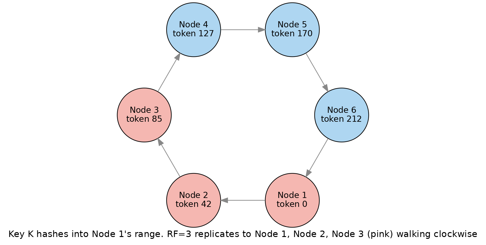
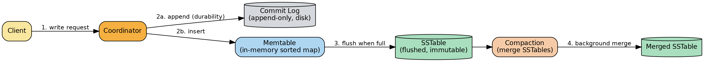
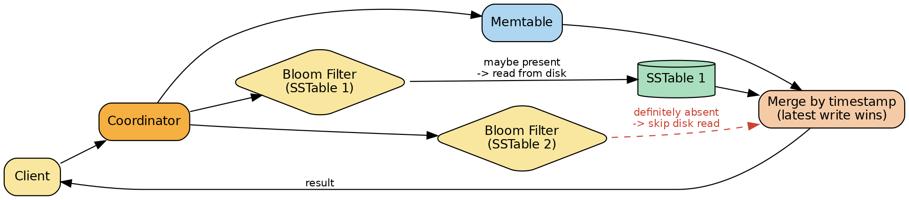

Apache Cassandra
A system-design deep dive and interview study guide: internal architecture first, then math, diagrams, real-world usage, trade-offs, and follow-up interview questions.
Overview
Apache Cassandra is a wide-column, masterless, distributed database built by taking Amazon Dynamo's decentralized replication and cluster-membership model and welding it to a Google Bigtable-style storage engine and data model. It exists to solve one problem: how do you keep writing and reading data with predictable low latency, with no single point of failure, when you have hundreds or thousands of commodity machines spread across multiple data centers, and hardware is failing continuously? Every other design decision in Cassandra — consistent hashing, gossip, log-structured storage, tunable consistency — falls out of that one requirement. This document goes straight into how the internals deliver on that promise, worked example by worked example, before circling back to comparisons, trade-offs, and interview questions.
Internal Architecture
1. Ring Architecture, Consistent Hashing, and Virtual Nodes (vnodes)
The problem. If you naively hash a key mod N (N = number of nodes) to decide which server owns it, adding or removing a single node reshuffles almost every key's owner. At cluster scale that means a full-cluster data migration every time you scale up or a node dies. This is unacceptable for an "always-on" system.
The ring. Cassandra solves this with consistent hashing, arranged as a logical ring:
- The output space of a hash function (by default Murmur3, a fast non-cryptographic hash) is treated as a fixed circular numeric space — conceptually from a minimum value to a maximum value that wraps back to the minimum.
- Every physical node is assigned one or more numeric positions on this ring, called tokens.
- Every row's partition key is hashed to produce a token. To find which node owns that row, you walk the ring clockwise from that token until you hit the first node — this node is the coordinator (primary owner) for that key. Additional replicas are the next N-1 distinct physical nodes walking further clockwise (this is Dynamo's "preference list" idea).
- A token range is therefore just the arc of the ring between one node's token and the previous node's token; whichever physical node's token ends that arc owns every key that hashes into it.
Worked example (RF=3, 8 evenly spaced tokens across, say, 4 physical nodes with 2 tokens each — vnodes): Suppose token boundaries going clockwise are t1 < t2 < ... < t8, owned respectively by nodes A, B, C, D, A, B, C, D (each physical node owns two non-adjacent tokens). A write for key "user:42" hashes to a value that falls in the arc (t2, t3]. Node C (owner of t3) is the coordinator. With RF=3, Cassandra also replicates to the next two distinct physical nodes walking clockwise past t3 — say D and A. So the three replicas for "user:42" are C, D, A. If node C goes down, only the data whose token range ends at t3 is affected for new coordination, not the whole ring — this is the key benefit of consistent hashing: node departure/arrival only disturbs immediate neighbors on the ring, not the entire keyspace.

Virtual nodes (vnodes). Plain consistent hashing with one token per node works only if you have many physical nodes; with a handful of nodes and evenly spaced tokens, there's no way to add capacity incrementally without manual token re-splitting. Dynamo's answer, which Cassandra adopted, is virtual nodes (vnodes): each physical node claims multiple random (or algorithmically balanced) token positions on the ring instead of just one.
- Token: a single position on the hash ring.
- Endpoint: a physical IP:port.
- Host ID: identifies one physical node, which owns one or more tokens.
- Vnode: one token on the ring, owned by a given Host ID.
Benefits: when a new physical node joins, it takes over many small, scattered slices of the ring from many existing neighbors (instead of one big slice from a single neighbor), so the new node accepts roughly equal amounts of data from many peers simultaneously and rebalances faster and more evenly. When a node fails, its query load is spread across many other nodes instead of dumping entirely onto one neighbor.
Trade-off: more tokens per node also means more overlapping "neighbor" combinations (up to 2 × (RF − 1) extra neighbors per token) — this raises the probability that some unlucky combination of simultaneous node failures makes a token range briefly unavailable, and it also slows down cluster-wide operations like repair (more, smaller token ranges to reconcile). Cassandra 2.x defaulted to 256 vnodes/node (pure random placement, needing many tokens to stay balanced); Cassandra 3.x+ ships a deterministic token allocation algorithm that balances the ring well with far fewer tokens per node (commonly 4–16 today), reducing that failure-combination risk.
2. Gossip Protocol and the Phi (φ) Accrual Failure Detector
Gossip: how nodes learn about each other. Cassandra has no master node coordinating membership. Instead, every node runs an independent gossip task once per second:
- It increments its own heartbeat/version state.
- It picks one random live peer and exchanges its full view of cluster state with it (endpoint states, versioned as
(generation, version)pairs — generation is a restart counter, version is a logical clock incremented ~1/second). - It probabilistically also gossips with any node currently believed unreachable, to detect recovery.
- If it didn't gossip with a seed node in this round, it does so as a fourth step.
Because each exchange merges the freshest version of every known node's state (each node compares version numbers and keeps whichever is newer), information about a state change (say, a node joining) propagates to the whole cluster in O(log N) gossip rounds — in practice a few seconds even for clusters with hundreds of nodes. Gossip carries membership, token ownership, and schema-version metadata; it is the control plane that lets any node route a request for any key directly to the right replica, without a lookup service.
Why not a simple timeout? A fixed heartbeat timeout ("no heartbeat for 10s ⇒ dead") is a bad failure detector at scale: on a loaded or congested network, a genuinely healthy node can miss a heartbeat window, causing a false "DOWN" verdict and needless data movement/hint generation. Conversely, a timeout long enough to avoid false positives on a bad network is too slow to react on a good one.
The phi (φ) accrual failure detector. Cassandra (from the original paper, based on Hayashibara et al.'s 2004 φ Accrual Failure Detector) replaces the binary up/down timeout with a continuously-valued suspicion level, φ, per monitored node:
- Each node keeps a sliding window of recent inter-arrival times of gossip heartbeats from every peer.
- From that window it estimates the distribution of inter-arrival times (Cassandra's implementation empirically found an exponential distribution fit the gossip channel better than the Gaussian distribution the original paper assumed).
- Given the time
tsince the last heartbeat was received from a node, φ is computed such that φ(t) = −log₁₀( P(time_since_last_heartbeat > t) ), i.e., φ is the negative log (base 10) of the probability that a heartbeat this late could still arrive, under the observed distribution. - What φ means concretely (straight from the paper): if you decide to convict (suspect) a node once φ crosses 1, the probability that decision will later turn out wrong (a "late" heartbeat arrives after all) is about 10%. At φ = 2, that error probability drops to about 1%. At φ = 3, about 0.1%. So φ is literally "how many nines of confidence" you have that the node is actually down, expressed on a log scale, and it self-adjusts to each peer's network/load conditions because it's derived from that peer's own observed heartbeat history, not a single global constant.
- Cassandra exposes this as the tunable
phi_convict_threshold(default 8 in modern Cassandra; the original paper used a "slightly conservative" value of 5). Lower values convict faster but risk more false positives; higher values (10–12) are recommended in environments with noisier networks (the docs specifically call out EC2 for this).
Worked example from the original paper: Facebook benchmarked older failure detectors (fixed timeout, SWIM-style) on a 100-node cluster and measured ~2 minutes to detect a genuinely failed node — far too slow operationally. Switching to the φ accrual detector with φ set to 5 brought average detection time down to ~15 seconds on the same cluster, while remaining self-tuning against real network jitter instead of a hand-picked timeout.
Once a node is convicted, Cassandra stops routing reads to it (and, depending on consistency level, may fail writes to it or fall back to hinted handoff). Note: UP/DOWN state is a local decision at each node — it is not itself gossiped; only raw heartbeat state is gossiped, and each node independently derives its own φ-based verdict about every peer, then separately verifies reachability over an actual network channel before marking it back UP.
3. The Write Path: Commit Log → Memtable → SSTable Flush → LSM-Tree
Why Cassandra's storage engine looks the way it does. Cassandra's storage engine is a Log-Structured Merge Tree (LSM-tree): an append-only design, the opposite of a traditional B-tree database that does in-place random updates. The entire point is to turn every write into sequential disk I/O and defer all the expensive random-access work (merging, deduplication, index rebuilding) to a background process. Sequential writes to a spinning disk or SSD are dramatically faster than random writes/seeks, which is the single biggest reason Cassandra can sustain very high write throughput on commodity hardware.
Step by step:
- Commit log (durability). Every mutation is first appended to a local, on-disk, append-only commit log — a Write-Ahead Log (WAL). This is a purely sequential write (Cassandra recommends putting it on its own disk specifically so its I/O pattern stays 100% sequential). The commit log is what guarantees durability: if the node crashes before the in-memory data is flushed, mutations are replayed from the commit log on restart. The log is split into rolling segments (default
commitlog_segment_size= 32 MiB, historically 128 MB in early production deployments); once a segment's data has been safely flushed to SSTables it is recycled/deleted.commitlog_synccan bebatch(acknowledge only after fsync — safer, slower) orperiodic(acknowledge immediately, fsync everycommitlog_sync_period, default 10s — faster, small window of possible data loss on crash). - Memtable (in-memory structure). Immediately after (or logically alongside) the commit log write, the mutation is applied to an in-memory structure called the memtable — essentially a sorted, per-table write-back cache, sorted by the row's token/clustering key. There is typically one active memtable per table. Because it's sorted and in memory, a memtable can be both written to and read from very cheaply, and the data becomes queryable immediately, before it ever reaches disk.
- Flush → SSTable. When a memtable's size crosses a threshold (or the commit log needs space freed), it is flushed: written out to disk in a single sequential pass, in already-sorted order — no sort step is required at flush time — becoming an immutable SSTable ("Sorted String Table"). Because SSTables are never mutated after creation, there is no locking needed for concurrent reads: the server's read/write path is essentially lock-free, unlike B-tree engines that must coordinate in-place page updates. Once flushed, corresponding commit log segments can be recycled.
- The LSM-tree emerges from repetition. Over time, many immutable SSTables accumulate per table, each representing a batch of writes sorted internally but not merged with each other. This is exactly an LSM-tree: "L0" being memtable + freshly flushed SSTables, with a background compaction process (Section 5) periodically merge-sorting multiple SSTables into fewer, larger ones — mirroring Bigtable's compaction design, cited explicitly in Cassandra's original paper.

Why this makes writes fast. A relational/B-tree engine must, on every write, seek to the right page, potentially read it in, modify it in place, and write it back — random I/O, with locking to protect concurrent readers. Cassandra's write path does zero reads and zero random-access disk seeks: the commit log append is sequential, the memtable update is an in-memory operation, and the eventual SSTable flush is also a single sequential dump. The cost of "tidying up" (deduplicating overwrites, expiring deleted data, merging fragments) is pushed entirely into the background compaction process, decoupled from the client-facing write latency. This is the fundamental read/write trade-off of LSM-trees: writes are cheap, but reads must reassemble data that might be scattered across several files, and background compaction adds extra I/O ("write amplification") that isn't part of the original write.
4. The Read Path: Memtable, Row Cache, Bloom Filters, Partition Index/Summary, Compression, and the Merge
Because a partition's data can live in the active memtable and in zero or more SSTables (each SSTable might hold an older version, a newer version, or only some columns), a read is fundamentally a merge operation across multiple sources, keeping the most recent value per column by timestamp (last-write-wins).
Cassandra's documented read path, in order:
- Check the memtable. If the requested partition data is present, it's the freshest version — but on-disk SSTables may still hold other columns/rows for the same partition that must be merged in.
- Check the row cache (if enabled). An optional, off-heap, LRU cache of entire hot partitions. A hit here can save up to two disk seeks (skipping Bloom filter/index/data lookups entirely). It is not write-through: a write to a cached row invalidates that partition's cache entry rather than updating it, and it is recommended only for very read-heavy (~95%+ reads) workloads, since it's actively harmful (extra invalidation overhead, memory pressure) for write-heavy ones.
- Check the Bloom filter for each candidate SSTable. This is the workhorse of read-path efficiency and is detailed in the math section below. Each SSTable stores a small, off-heap Bloom filter summarizing which partition keys it might contain. A Bloom filter can definitively say "this key is absolutely not here" (skip the file, no disk I/O at all) or "this key is probably here" (must check further — probabilistically, it can be wrong, i.e., a false positive, but it can never produce a false negative).
- Check the partition key cache (if enabled). An off-heap cache of exact partition-key → on-disk-location mappings. A hit skips straight to the compression offset map, saving one disk seek versus consulting the on-disk index.
- If no key-cache hit: check the partition summary, an in-memory sampling of the on-disk partition index (by default every 128th index entry, tunable). This narrows the search to a small byte range of the much larger on-disk index file, rather than requiring a scan of the whole thing.
- Check the partition index (on disk) within the range identified by the summary, to find the exact offset of the partition's data.
- Use the compression offset map to translate that logical offset into the physical location of the compressed block on disk holding the data (Cassandra typically stores SSTable data compressed in fixed-size chunks; the compression offset map is the off-heap structure that knows where each compressed chunk starts).
- Fetch and decompress the data block(s) from the SSTable(s) that survived the Bloom-filter/index screening — this is the only true disk I/O most reads need to pay for.
- Merge the results returned by the memtable and however many SSTables were consulted, resolving column-level conflicts by last-write-wins timestamp, and return the reconciled row(s) to the coordinator/client.

If the partition key cache misses, a full-index-backed lookup costs roughly two seeks: one for the partition index, one for the actual data block; a key-cache hit collapses this to about one seek.
Rough capacity numbers (from Cassandra's own docs): a Bloom filter grows to roughly 1–2 GB of RAM per billion partition keys (matches the math worked out below); the compression offset map grows to roughly 1–3 GB per terabyte of compressed data. Both structures live off-heap, so they don't count against JVM heap sizing, but they are real memory costs operators must plan for on dense nodes.
5. Compaction Strategies: Solving Write Amplification, Read Amplification, and Space Amplification
The problem compaction solves. The LSM-tree design that makes writes fast has a cost: over time, a single logical partition's data (and old, overwritten, or deleted versions of it) end up smeared across many SSTables. Left unchecked this means: (a) reads must check more and more files (slower reads — read amplification), (b) deleted data (tombstones, see Section 8/14) and stale duplicate versions of overwritten cells sit around forever wasting disk (space amplification), and (c) there's no way to reclaim space unless something merges SSTables together. Compaction is the background process that periodically merges multiple SSTables into fewer, larger ones via merge-sort (cheap because each input SSTable is already sorted by key), during which it also drops fully-shadowed old versions and tombstoned rows once they're safe to remove. This is directly analogous to Bigtable's compaction process, cited by name in the original Cassandra paper. Compaction itself, however, introduces write amplification: the same logical byte of data gets rewritten to disk multiple times over its lifetime as it's merged from small SSTable to progressively larger ones.
SizeTieredCompactionStrategy (STCS) — the historical default. Groups similarly-sized SSTables into "buckets" (an SSTable joins a bucket if its size is within [0.5×, 1.5×] of that bucket's average size, by default) and merges roughly 4+ (default min_threshold, up to max_threshold=32) same-bucket SSTables into one bigger SSTable. Good for write-heavy workloads (low CPU/IO overhead per compaction), but bad for reads and space: because merging is triggered purely by size, not by which partitions overlap, a given row can be scattered across SSTables of wildly different generations, and old/deleted data is not evicted predictably. Space amplification is STCS's Achilles' heel: because two roughly-equal-size SSTables must both exist on disk simultaneously while being merged into a new one, and this can cascade as SSTables grow, operators are advised to keep up to 50% of a node's disk free as headroom in the worst case (a full/major compaction with STCS is explicitly discouraged in production for this reason).
LeveledCompactionStrategy (LCS) — optimized for reads. Organizes SSTables into levels (L0, L1, L2, ...), each roughly 10× the size of the previous one (the "fanout," default fanout_size=10) and, from L1 upward, guarantees SSTables within a level are non-overlapping in key range. This means a read typically has to check at most one SSTable per level rather than an unbounded number of same-generation files, dramatically bounding worst-case read amplification. SSTables flushed from memtables land in L0 (which is allowed to have overlapping ranges); L0→L1 compaction folds them into the leveled structure. If L0 backs up past 32 SSTables, Cassandra falls back to an STCS-style merge inside L0 as a pressure-release valve. Space amplification is much lower than STCS — the docs state LCS needs only roughly 10% extra disk headroom to operate, versus STCS's ~50% — but this comes at the cost of significantly higher background write amplification (a single row change may eventually be rewritten as it cascades down several levels) and higher CPU/IO usage from more frequent, smaller compactions. LCS is recommended for read-heavy workloads and is explicitly not recommended for write-heavy ones; major (all-in-one) compactions are discouraged here too.
TimeWindowCompactionStrategy (TWCS) — optimized for time-series / TTL data. Buckets SSTables by time window (configurable unit/size, e.g., 3 days) based on each SSTable's max write timestamp. Within the currently active window, TWCS behaves like STCS (merging same-window SSTables together); once a window closes, all its SSTables are merged one final time into a single SSTable and then never touched again. This means fully-expired data (common in TTL'd/time-series workloads — metrics, event logs, IoT) can be reclaimed by simply dropping an entire expired SSTable file, without ever having to read-and-rewrite it — the cheapest possible way to reclaim space, and dramatically better than STCS/LCS for this access pattern. The recommended tuning heuristic is to pick a window size that yields roughly 20–30 windows across the data's total retention/TTL period (e.g., a 90-day TTL → ~3-day windows). Operational hazard: if old and new data ever get comingled in the same time-windowed SSTable (e.g., because of read-repair pulling old data back into the current memtable, or explicit out-of-order USING TIMESTAMP writes), that SSTable can no longer be cleanly dropped when its "natural" window expires — undermining the whole strategy.
| Strategy | Best for | Read amplification | Write amplification | Space amplification (extra headroom) |
|---|---|---|---|---|
| STCS (legacy default) | Write-heavy, general purpose | High (row can be in many same-size files) | Low–moderate | High (~50% worst case) |
| LCS | Read-heavy | Low (≈1 SSTable/level) | High (cascades through levels) | Low (~10%) |
| TWCS | Time-series / TTL data | Low within active window | Low (mostly write-once per window) | Very low (whole expired files dropped) |
(Cassandra 5.0 introduces a newer Unified Compaction Strategy (UCS) that generalizes and largely subsumes STCS/LCS/TWCS behind one tunable strategy, now the recommended default for new tables — worth a one-line mention in an interview if asked about "what's new.")
6. Tunable Consistency: Replication Factor, Consistency Levels, and the Quorum Formula
Replication factor (N / RF). Every keyspace (Cassandra's namespace for a set of tables) specifies a Replication Factor (RF), the number of copies of each partition kept in the cluster (or per-datacenter, see Section 8). RF=3 is the overwhelmingly common default for production: it tolerates one node failure while still allowing a strict-majority quorum operation to succeed.
Consistency levels (CL). Rather than making the client explicitly pick raw R (read replica count) and W (write replica count) integers the way the original Dynamo paper does, Cassandra offers a fixed menu of named consistency levels per read or write operation:
| Level | Meaning |
|---|---|
ANY | Write-only; succeeds if even a hint is stored (weakest, highest availability) |
ONE | 1 replica must respond |
TWO | 2 replicas must respond |
THREE | 3 replicas must respond |
LOCAL_ONE | 1 replica in the coordinator's local datacenter |
QUORUM | ⌊N/2⌋ + 1 replicas (cluster-wide majority) must respond |
LOCAL_QUORUM | Majority of replicas within the local datacenter only |
EACH_QUORUM | Majority of replicas in every datacenter must respond |
ALL | Every replica must respond (strongest, lowest availability) |
Important subtlety: a write is always sent to all N replicas regardless of consistency level — the CL only controls how many acknowledgements the coordinator waits for before replying to the client. Any replica not yet caught up will still eventually get the write via normal replication, hints, or repair.
The quorum formula: R + W > N. Cassandra's tunable consistency is a menu-driven version of Dynamo's classic rule: if the read consistency level's replica count (R) and the write consistency level's replica count (W) satisfy R + W > N (N = replication factor), then any successful read is mathematically guaranteed to intersect with at least one replica that has the latest successful write — i.e., you get strong (linearizable-ish, last-write-wins) consistency, at the cost of requiring more nodes to be reachable per operation.
Worked numeric examples (RF = N = 3):
QUORUM=⌊3/2⌋ + 1 = 2. Write CL=QUORUM, Read CL=QUORUM ⇒ W=2, R=2, W+R=4 > N=3 ✅ strong consistency, and the cluster can tolerate 1 node being down for both reads and writes to keep succeeding.ALLwrite +ONEread: W=3, R=1, W+R=4 > 3 ✅ still strongly consistent (every replica got the write, so any single one you read is up to date) — but a write now fails if any replica is unreachable (no fault tolerance on writes).ONEwrite +ONEread: W=1, R=1, W+R=2 ≤ 3 ❌ no consistency guarantee — you might read from a replica that never received the write yet. This is the fastest/most available option; consistency becomes "eventual," backstopped by read repair and anti-entropy repair (Section 7).- RF=5 example:
QUORUM=⌊5/2⌋+1 = 3. W=3, R=3, W+R=6>5 ✅ strongly consistent, and now the cluster tolerates 2 simultaneous node failures per operation while still satisfying quorum — this is why increasing RF (at storage cost) increases both durability and the fault tolerance available at a given consistency level.
LOCAL_QUORUM in multi-DC deployments. In a cluster spanning multiple datacenters with, say, RF=3 per DC (6 total replicas across 2 DCs), LOCAL_QUORUM only needs 2-of-3 acknowledgements within the coordinator's own datacenter — it never waits on a cross-DC network round trip. This gives read-your-own-writes consistency for clients pinned to one DC, at local-network latency, which is why it's the standard recommendation for multi-DC production clusters (versus QUORUM, which would require majority agreement across all replicas cluster-wide, i.e., 4-of-6, incurring cross-DC latency on every request).
7. Hinted Handoff, Read Repair, and Anti-Entropy Repair (Merkle Trees)
Because any replica can independently accept a write (multi-master), replicas can drift out of sync — after a network blip, a slow node, or a full outage. Cassandra layers three mechanisms of increasing thoroughness (and decreasing frequency) to converge replicas back to consistency:
- Hinted handoff (best-effort, on the write path). If a coordinator can't reach a replica that should receive a write, it stores a hint — basically "replay this mutation for node X once it's back" — either locally or on another live node, in a
system.hintstable/log. When the down replica returns and is markedUPagain, hints are replayed to it. Hints have a time limit (max_hint_window, default 3 hours); if a node is down longer than that, the coordinator gives up storing further hints for it (to avoid unbounded hint buildup), and the node must be caught up via full repair instead. Hinted handoff is optimistic and doesn't guarantee delivery (the hint-holding node could also crash before replaying it) — it's a latency/availability optimization, not a consistency guarantee. - Read repair (best-effort, on the read path). When a read at CL > ONE queries multiple replicas and notices they disagree (different timestamps for the same cell), Cassandra sends the most recent version to the stale replica(s) as part of / immediately after satisfying the read, opportunistically healing that one partition. This only fixes rows that actually get read, so cold/rarely-read data doesn't benefit.
- Anti-entropy repair (thorough, manually/scheduled,
nodetool repair). The only mechanism that gives an actual, complete consistency guarantee across all data (not just recently-written or recently-read rows). Each replica computes a Merkle tree — a binary hash tree where each leaf is a hash of a small sub-range of the partition space, and each parent node is the hash of its children's hashes — over its dataset. Replicas exchange Merkle trees and compare them level by level: if a subtree's root hash matches between two replicas, everything under it is provably identical and can be skipped entirely; only branches whose hashes disagree need their actual underlying rows streamed and reconciled. This lets Cassandra find the mismatched data without transferring or even hashing the entire dataset over the network for comparison — you only pay for the (hopefully small) fraction that's actually out of sync. Modern Cassandra also supports sub-range repair (higher-resolution trees over just part of the ring) and incremental repair (only repairing data written/changed since the last repair, using a "repaired"/"unrepaired" SSTable split), both improvements over the original Dynamo-style full-repair-only approach. Operators are expected to run repair regularly (classically withingc_grace_seconds, default 10 days) so that tombstones can be safely purged cluster-wide (see Section 14) without risk of deleted data "resurrecting."
8. Multi-Datacenter Replication: NetworkTopologyStrategy
Cassandra's pluggable replication strategy decides which physical nodes hold the RF replicas for a token range.
- SimpleStrategy: treats the whole cluster as one flat ring; walks clockwise from the coordinator's token picking the next N−1 distinct nodes, ignoring racks/datacenters entirely. Fine for a single-DC test cluster, not recommended for production.
- NetworkTopologyStrategy (NTS): the production standard. You specify a separate replication factor per datacenter (e.g.,
{'DC1': 3, 'DC2': 3}), and within each datacenter NTS also tries to spread replicas across different racks (as reported by the cluster'sSnitch, the component that maps IPs to rack/DC topology) so that a replica set isn't accidentally concentrated in one failure domain. If the number of racks ≥ RF for that DC, each replica is guaranteed to land in a different rack; otherwise some racks end up holding more than one replica (with a documented caveat that uneven rack sizes can then create uneven load).
Worked example: A keyspace configured {'us-east': 3, 'eu-west': 3} keeps 3 full copies of every row in each region — 6 physical copies total. A client in us-east writing at LOCAL_QUORUM only needs 2 of the 3 us-east replicas to ack — no cross-Atlantic round trip on the write's critical path — while the mutation is also asynchronously sent to all 3 eu-west replicas so that region has a fully independent, complete copy of the data. If us-east suffers a total regional outage (power, undersea cable cut, etc.), eu-west still holds a complete, independently-servable replica set — this is explicitly the scenario NTS multi-DC replication is designed to survive, taken directly from the original paper's design goals around tolerating whole-datacenter failures.
System Design View: End-to-End Request Walkthroughs
Write Request, Step by Step (RF=3, CL=QUORUM)
- Client sends
INSERT/UPDATEto any node in the cluster via its driver (drivers are typically token-aware, meaning they usually pick a node that's already a replica to minimize hops, but any node can act as coordinator). - That node becomes the coordinator for this request. It hashes the partition key with the cluster's partitioner (Murmur3 by default) to get a token, and consults its locally-cached token map (kept up to date via gossip) to identify the 3 replica nodes owning that token range.
- The coordinator sends the write, in parallel, to all 3 replicas (regardless of consistency level — CL only affects how many acks it waits for).
- Each replica that receives the write: appends it to its local commit log (sequential, durable), then applies it to its active memtable.
- Each replica replies to the coordinator once its local write is durable.
- The coordinator waits for QUORUM = 2 acknowledgements (⌊3/2⌋+1), then returns success to the client. (If a replica is unreachable, the coordinator stores a hint for it instead, to be replayed later via hinted handoff.)
- Independently and later, each replica's memtable is eventually flushed to an immutable SSTable on disk once it crosses its size threshold; background compaction subsequently merges SSTables over time.
- Independently of this request, any drift between replicas (e.g., the one that missed the write and only got a hint later) is eventually caught up by hinted-handoff replay, read repair on subsequent reads, or scheduled anti-entropy repair.
Read Request, Step by Step (RF=3, CL=QUORUM)
- Client sends a
SELECTfor a partition key to a node (again, typically a token-aware driver connection). - That node is the coordinator; it hashes the key to find the 3 replicas that own it.
- Because CL=QUORUM, the coordinator sends a full data read request to enough replicas to satisfy quorum (2 of 3), and (depending on read-repair configuration/chance) may also send a lightweight digest request (a hash of what the value would be) to the third replica to opportunistically detect inconsistency without transferring the full payload.
- Each queried replica executes the local read path from Section 4: check memtable → row cache → Bloom filter per candidate SSTable → (key cache or partition summary → partition index) → compression offset map → fetch/decompress data → merge memtable + SSTable results by timestamp.
- The coordinator waits for at least 2 of the 3 responses (QUORUM), compares timestamps/digests across the replies.
- If replicas disagree, the coordinator triggers a read repair: it sends the most recent value to whichever replica(s) had stale data.
- The coordinator returns the most recent, reconciled value to the client.
The Math
Phi (φ) Accrual Failure Detector
Interpretation: choosing to convict a peer once φ ≥ some threshold Φ means the probability of that conviction being wrong (a heartbeat arrives late, after all) is about 10(−Φ). So Φ=1 → ~10% error rate, Φ=2 → ~1%, Φ=3 → ~0.1%, and so on — each unit of φ is "one more nine" of confidence.
Cassandra's tunable
phi_convict_threshold defaults to 8; the original paper's Facebook production benchmark used the more conservative value of 5, cutting failure-detection time on a 100-node cluster from ~2 minutes (older fixed-timeout/SWIM-style detectors) to ~15 seconds.
Bloom Filter False-Positive Rate
where
m = number of bits, k = number of independent hash functions, n = number of inserted elements.
Bits per element for a target false-positive rate
p: m/n = −ln(p) / (ln 2)² ≈ 1.44 × log₂(1/p)
Optimal hash count: k_optimal = (m/n) · ln 2 ≈ 0.693 × (m/n)
Full worked numeric example: Suppose an SSTable holds n = 1,000,000 partition keys, and we target Cassandra's default false-positive chance for non-leveled tables, p = 0.01 (1%).
Bits needed per key:
m/n = −ln(0.01) / (ln 2)² = 4.605 / 0.4805 ≈ 9.6 bits/key.
Total bits:
m ≈ 1,000,000 × 9.6 ≈ 9.6 million bits ≈ 1.2 MB.
Optimal hash count:
k = 9.6 × ln 2 ≈ 6.6 → round to 7.
Verify:
kn/m = 7 / 9.6 ≈ 0.729; e(−0.729) ≈ 0.482; (1 − 0.482)7 = 0.5187 ≈ 0.0100 ✅ matches the 1% target.
Scaling this up: 1 billion keys × 9.6 bits ≈ 9.6 billion bits ≈ 1.2 GB — which lines up almost exactly with Cassandra's own documented rule of thumb, "the Bloom filter grows to approximately 1–2 GB of RAM per billion partitions."
Why the false-positive rate matters at scale, not just per-file: if a read must probe N SSTables that do not actually contain the key, and each has an independent false-positive chance
p, the probability that at least one of them produces a false positive (triggering a wasted disk seek) is 1 − (1 − p)N. With p = 0.01 and N = 10 candidate SSTables: 1 − 0.9910 ≈ 1 − 0.904 ≈ 9.6% chance of at least one wasted disk trip on that read. This is precisely why fewer, larger SSTables (i.e., effective compaction) reduces wasted I/O independent of the per-file Bloom filter accuracy — it shrinks N, not just p.
Quorum Consistency Formula
N = replication factor, W = number of replicas that must acknowledge a write (derived from write consistency level), R = number of replicas that must respond to a read (derived from read consistency level), QUORUM (cluster-wide majority) = ⌊N/2⌋ + 1.
Full worked example, RF=3:
QUORUM = ⌊3/2⌋+1 = 2. Using QUORUM for both reads and writes: W=2, R=2, W+R=4 > N=3 ⇒ strongly consistent, tolerating 1 node down. Using ONE/ONE: W=1,R=1,W+R=2 ≤ 3 ⇒ eventually consistent only, but maximum availability/lowest latency, since only a single replica anywhere needs to be reachable.
Second worked example, RF=5:
QUORUM = ⌊5/2⌋+1 = 3. W=3, R=3, W+R=6 > 5 ⇒ still strongly consistent, but now the operation tolerates 2 simultaneous replica failures instead of 1 — illustrating that raising RF (at extra storage/replication cost) buys more fault tolerance at the same consistency level.
Compaction Space Amplification
LCS: roughly ~10% extra disk headroom needed, because compactions happen against much smaller, bounded-size SSTables per level rather than the entire dataset at once — at the cost of much higher write amplification (each byte is rewritten repeatedly as it cascades down levels, roughly proportional to the number of levels, since each level is ~10× larger than the last, i.e.,
log_fanout(total_data/sstable_size) levels).
TWCS: near-zero extra amplification for expired data — whole SSTables are dropped once every row inside is past its TTL/tombstone grace period, with no rewrite at all.
Token Range Size (Partitioner Space)
RandomPartitioner (legacy, MD5-based): tokens are unsigned 128-bit integers ranging from 0 to 2¹²⁵ − 1 (an md5 hash of the key is used directly as the token).
With v vnodes per node across k physical nodes, the ring is divided into roughly
v × k token ranges (arcs), each of average size (token space size) / (v × k) — e.g., with Murmur3's 2⁶⁴ space, 100 physical nodes, and 16 vnodes each (1,600 total tokens), the average arc size is 2⁶⁴ / 1600 ≈ 1.15 × 10¹⁶ — the actual placement is randomized/balanced rather than perfectly even, which is exactly why deterministic token allocation was introduced in 3.x to keep real arcs close to this average.
Where Cassandra Sits on CAP
Cassandra is frequently summarized as an AP system (Availability + Partition tolerance, sacrificing strict Consistency) in the classic Dynamo lineage — and that's the correct default characterization, since Cassandra's out-of-the-box multi-master replication with last-write-wins conflict resolution favors staying available and accepting requests during a network partition rather than blocking. But the more precise, interview-correct answer is: Cassandra's consistency/availability trade-off is tunable per-operation, not fixed for the whole system.
- Partition tolerance (P) is never optional/negotiable in Cassandra — the whole system is built assuming nodes and network links fail continuously, so P is always assumed present. The real trade-off knob is between C and A, per read/write, via the consistency level:
- Consistency level
ONE/LOCAL_ONE(or evenANYfor writes): behaves like a classic AP system — a single reachable replica is enough, so the operation succeeds even during a significant partition, at the cost of possibly reading stale data. - Consistency level
ALL: behaves like a CP system for that operation — every replica must be reachable and agree, so during a partition that splits replicas across the cut, the operation will simply fail rather than return possibly-stale or divergent data. QUORUM/LOCAL_QUORUMsit in between: they tolerate a minority of replicas being unreachable (still available through a partial partition) while guaranteeing overlap with any other quorum operation (R+W>N), which is why they're the most commonly recommended default for production — a pragmatic middle ground rather than a pure CAP corner.
- Consistency level
- This is exactly why interviewers like this question: the "right" answer is not "Cassandra is AP" nor "Cassandra is CP," but "Cassandra assumes partition tolerance always, and lets you dial consistency versus availability per query via consistency levels and replication factor — R+W>N buys you C at the cost of A, R+W≤N buys you A at the cost of C."
Real-World Usage and Comparison
Real-World Usage
Cassandra was originally built at Facebook (Lakshman & Malik, open-sourced 2008) specifically to power Inbox Search — full-text search over users' Facebook inbox messages — because that workload needed extremely high write throughput (billions of writes/day) plus multi-datacenter replication to keep search latency low for a globally distributed user base; at the time of the original paper it stored 50+ TB across a 150-node cluster split across US east/west coast data centers, with reported median read latencies around 15–18 ms.
Since then it has become one of the most widely deployed wide-column stores in industry, commonly cited (per Cassandra's own case studies and public engineering talks) at companies including Netflix (reported in various Netflix engineering talks as 10,000+ instances across 100+ clusters storing multiple petabytes, serving on the order of a trillion requests/day, used heavily for viewing history/personalization data), Apple (publicly disclosed at Cassandra Summit as 160,000+ instances / 100+ PB / 1,000+ clusters — one of the largest known deployments), Discord (used for the core "trillions of messages" storage layer for several years, discussed in depth in Discord's own engineering blog, before a widely-discussed migration to ScyllaDB), Uber, Instagram, Spotify, Bloomberg, eBay, Comcast, and reportedly roughly 40% of the Fortune 100 in some form. Typical use cases share a signature: very high write volume, need for multi-region active-active replication, and read patterns that are mostly "give me everything for this key," rather than complex ad-hoc joins/aggregation (Cassandra deliberately does not support cross-partition transactions or joins).
Comparison to Dynamo and Bigtable
The original paper is explicit that Cassandra is a synthesis of the two.
Borrowed from Amazon Dynamo: partitioning data via consistent hashing on a ring; multi-master replication — any replica can accept a write — with tunable consistency (R+W>N quorum reasoning); gossip-based distributed cluster membership and failure detection; designed to run on commodity hardware, scaling out incrementally. Where Cassandra deliberately diverged from Dynamo: Dynamo uses vector clocks and (often client-driven) conflict resolution for concurrent writes to the same key, which requires a read as part of every write to manage those vector timestamps — expensive under very high write throughput. Cassandra instead uses simple timestamp-based last-write-wins conflict resolution (formally a Last-Write-Wins-Element-Set CRDT per row), trading some semantic richness (no automatic multi-value conflict merging) for a write path that never needs to read before it writes.
Borrowed from Google Bigtable: the data model — a sparse, wide, multi-dimensional map — a table conceptually indexed by row key, with rows grouping flexible "column families" of typed columns (Cassandra additionally offered "super column families," a nested column-family-within-a-column-family construct, in its earliest versions, later superseded by CQL's richer collection types); the local persistence engine design philosophy — an LSM-tree of immutable, sorted, on-disk files (SSTables — Cassandra literally reuses Bigtable's file-format name) with a background compaction process that merges them — described in the original paper as "very similar to the compaction process that happens in the Bigtable system." Where Cassandra deliberately diverged from Bigtable: Bigtable relies on a separate distributed file system (GFS) underneath it for durability/replication and a centralized master for tablet assignment; Cassandra has no separate distributed filesystem and no master — replication, membership, and durability are all handled natively, peer-to-peer, by Cassandra itself (the Dynamo half of the synthesis).
In short: Cassandra = Dynamo's decentralized, masterless, gossip-based, tunably-consistent cluster architecture, running Bigtable's wide-column data model on top of an LSM-tree storage engine, with a simpler last-write-wins conflict model swapped in for Dynamo's vector clocks to keep the write path read-free.
Trade-offs and Known Pain Points
- Tombstones. A
DELETEin Cassandra doesn't remove data immediately — since SSTables are immutable, a delete is recorded as a special marker (a tombstone) that must propagate to all replicas and survive at leastgc_grace_seconds(default 10 days) before it can be safely purged by compaction, specifically so that a replica that was down during the delete (and thus never received it) has time to be repaired before the tombstone disappears — otherwise the old data could "resurrect" on that lagging replica. Workloads with heavy delete/overwrite patterns, or that rely on TTL'd data with a long grace period, can accumulate huge numbers of tombstones that reads must scan past, causing severe latency spikes or even query timeouts/ReadTimeoutExceptions ("tombstone gravestones" is a very commonly cited Cassandra operational pain point). Discord's own engineering blog documents exactly this: their message-delete tombstones (originally a 10-day TTL, later reduced to 2 days specifically because of the problems it caused) grew into large uncompacted ranges that, during their later database migration, caused reads over the oldest token ranges to repeatedly time out until those ranges were manually compacted. - Compaction overhead. Compaction is background CPU/disk I/O that competes with foreground read/write traffic; picking the wrong strategy for a workload (e.g., LCS on a write-heavy table, or STCS on a table needing tight space bounds) can cause compaction to fall behind, ballooning SSTable counts, disk usage, and read latency — and once "behind," catching up requires even more I/O, a feedback loop operators must actively monitor (
nodetool compactionstats) and tune for. - Hotspots. Poor partition key design (e.g., a key with very low cardinality, or a "hot" key like a single popular user/event that gets disproportionate traffic) sends a wildly uneven share of requests to whichever few nodes happen to own that key's token range, defeating the whole point of ring-based horizontal scaling; similarly, choosing too few vnodes, or an unlucky/unbalanced token assignment, can leave some physical nodes owning much larger arcs (and therefore much more data/traffic) than others. Wide partitions (a huge number of rows/columns under one partition key — the classic "unbounded partition" anti-pattern, e.g., "all messages ever sent by user X" with no time-bucketing) similarly overload single nodes and blow up compaction/read costs for that one partition.
- Secondary consistency/operational costs. No cross-partition transactions or joins (an intentional trade-off for scalability, but a real modeling constraint — data must be denormalized per query pattern up front); tunable consistency below
QUORUMmeans genuinely stale reads are possible and must be tolerated by the application; and repair, while essential for correctness, is itself an expensive, must-schedule background operation that many teams under-invest in until it causes a consistency incident.
Common Interview Questions
log₂(1/p), so a 10× reduction in target false-positive rate is a few extra bits/key, not a 10× memory increase, but it's still a substantial (~3x in Cassandra's stated case) jump.Key Takeaways
References
- Avinash Lakshman & Prashant Malik — "Cassandra — A Decentralized Structured Storage System" (original paper, LADIS 2009 / SIGOPS Operating Systems Review)
- Cornell LADIS 2009 — mirror of the original Cassandra paper
- ACM Digital Library — Cassandra paper index entry
- Apache Cassandra official docs — "Dynamo — Architecture" (consistent hashing, vnodes, replication strategies, tunable consistency, gossip, phi accrual detector)
- Apache Cassandra official docs — "Storage Engine" (commit log, memtables, SSTables, LSM-tree, compression)
- Apache Cassandra official docs — "Bloom Filters"
- Apache Cassandra official docs — Compaction overview index
- Apache Cassandra official docs — "Size-Tiered Compaction Strategy (STCS)"
- Apache Cassandra official docs — "Leveled Compaction Strategy (LCS)"
- Apache Cassandra official docs — "Time Window Compaction Strategy (TWCS)"
- DataStax docs (Apache Cassandra 3.x) — "Failure detection and recovery (gossip / phi accrual)"
- DataStax docs (Apache Cassandra 3.x) — "How is data read?" (row cache, Bloom filter, partition key cache, partition summary, partition index, compression offset map)
- DataStax capacity planning docs — "Capacity planning and hardware selection" (STCS ~50% free-disk-space guidance)
- Baeldung — "Consistency Levels in Cassandra" (R+W>N worked examples)
- Discord Engineering Blog — "How Discord Stores Trillions of Messages" (tombstone TTL reduction from 10 days to 2 days; migration tombstone compaction issue)
- ScyllaDB glossary — "Bloom Filter"
- ScyllaDB glossary — "CAP Theorem"
- Apache Cassandra case studies / ecosystem page — cassandra.apache.org case studies (Netflix, Apple, and other production deployment scale figures as publicly disclosed in vendor/engineering talks)